Toscane (Grand-Duché) *
1850 - Lion assis, couleur sur azuré

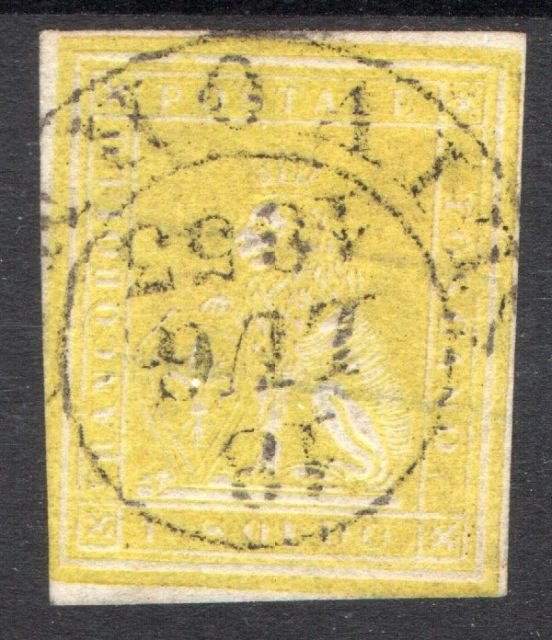

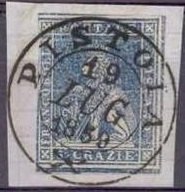
1860 - Croix de Savoie:
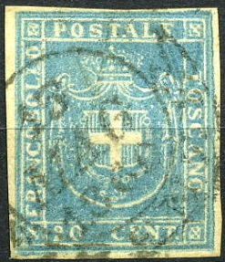
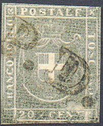
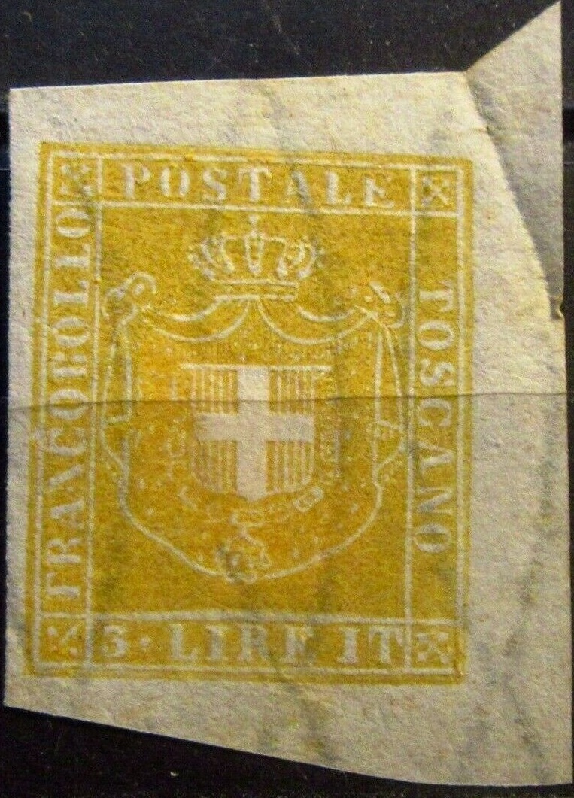
I'm not entirely sure that this is
actually an Oneglia forgery.
Return To Catalogue - Oneglia forgeries, introduction, part 1 - Oneglia forgeries, introduction, part 2 - Panelli - Spiotti - Venturini
Note: on my website many of the
pictures can not be seen! They are of course present in the
catalogue;
contact me if you want to purchase it.
Erasmo Oneglia was an Italian forger in the late 19th century from Turin. He is famous for his engraved forgeries, but he also made photo-lithographed forgeries. Many of his forgeries were previously attributed to the forger Angelo Panelli. The engraved Oneglia forgeries are usually 'overinked'. When Oneglia applied a watermark on his forgeries, it is very clearly visible. His watermarks are impressed instead of being real watermarks. Oneglia also collaborated closely with A.Venturini and E.Spiotti. The exact relationships that these forgers had is not clear up to this day.
Oneglia forgeries, 1906 catalogue, "Saint-Vincent" to "Terre-Neuve"
Turquie. * |
|||
| Number | Year | Description | Price in Fr. |
1764-47 - Etoile et croissant dans un ovale, inscription en surcharge, dentelés: |
|||
| 1 | 25 piastre, vermillon............................................................................................................................ | Fr. 1.-- | |
1867 - Meme type |
|||
| 2 | 1867 | 25 piastre, orange | Fr. 1.-- |
| 1869 - Meme type | |||
| 3 | 1869 | 25 piastre, clair | Fr. 1.-- |
Toscane (Grand-Duché) * |
|||
| Number | Year | Description | Price in Fr. |
1850 - Lion assis, couleur sur azuré |
|||
| 1 | 1850 | 1 quattrino, noir.................................................................................................................................. | Fr. -.30 |
| 2 | 1 soldo, jaune | Fr. -.50 | |
| 3 | 2 soldi, brique | Fr. -.50 | |
| 4 | 1 crazia, carmin | Fr. -.10 | |
| 5 | 2 crazie, bleu | Fr. -.10 | |
| 6 | 4 crazie, vert | Fr. -.10 | |
| 7 | 6 crazie, bleu foncé | Fr. -.10 | |
| 8 | 9 crazie, violet | Fr. -.10 | |
| 9 | 60 crazie, brique | Fr. -.50 | |
| 1857 - Type 1850, couleur sur blanc | |||
  |
|||
| 10 | 1857 | 1 quattrino, noir | Fr. -.80 |
| 11 | 1 soldo, jaune | Fr. -.50 | |
| 12 | 1 crazie, carmin | Fr. -.10 | |
| 13 | 2 crazie, bleu | Fr. -.10 | |
| 14 | 3 crazie, vert | Fr. -.10 | |
| 15 | 6 crazie, bleu | Fr. -.10 | |
| 16 | 9 crazie violet | Fr. -.20 | |
| Gouvernement
Provisoire. 1860 - Croix de Savoie: |
|||
|   |
|||
| 17 | 1860 | 1 centisimo, violet | Fr. -.20 |
| 18 | 5 centisimi, vert | Fr. -.10 | |
| 19 | 10 centisimi, brun | Fr. -.10 | |
| 20 | 20 centisimi, bleu | Fr. -.10 | |
| 21 | 20 centisimi, gris | Fr. -.10 | |
| 22 | 40 centisimi, carmin | Fr. -.20 | |
| 23 | 80 centisimi, clair | Fr. -.30 | |
| 24 | 3 lire, jaune | Fr. 1.-- | |
| * Idem, avec filigrane: | |||
 |
|||
| 25 | 1850 | 1 quattrino, noir sur bleu | Fr. 1.50 |
| 26 | 1850 | 1 soldo, jaune sur bleu | Fr. 2.-- |
| 27 | 1860 | 1 cent., violet. | |
| 1 cent., violet foncé. | |||
| 5 cent., vert. | |||
| 5 cent., vert foncé. | |||
| 10 cent., brun. | |||
| 20 cent., bleu. | |||
| 20 cent., bleu foncé. | |||
| 40 cent., rouge. | |||
| 80 cent., clair. | |||
| 3 lire, jaune. | |||
| Toute la série de 10 pièces avec filigrane | Fr. 12.-- | ||
| * - 1851 - Papier bleu avec filigrane: | |||
| 28 | 1851 | 1 quatt. noir. | |
| 1 soldo, orange. | |||
| 3 crazie, carmin. | |||
| 2 crazie, bleu. | |||
| 4 crazie, vert. | |||
| 6 crazie, bleu foncé. | |||
| 9 crazie, brun lilas. | |||
| 60 crazie, rouge brun. | |||
| Toute la série de 9 pièces | Fr. 15.-- | ||
| Les mêmes: | |||
| 29 | 2 crazie, bleu | Fr, -.25 | |
| 30 | 4 crazie, vert | Fr. -.40 | |
| 31 | 9 crazie, brun lilas | Fr. 2.-- | |
I am not 100% sure that these are Oneglia forgeries, but they
do have large margins and are often pasted on small pieces of
paper.
They 1850/1857 issues often appear with a parallel six lines
cancel, a "18 LUG 1853 LIVORNO" or a "PISTOIA 19
LUG 1859" cancel.
Most of the 1860 forgeries have a "15 MAG 1860 FIRENZE"
cancel.
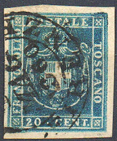 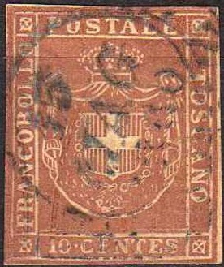
These forgeries even appear to be engraved.
Transwaal. * (Transvaal) |
|||
| Number | Year | Description | Price in Fr. |
| 1 | 1877-79: | Série de 5 pièces non dentelé, avec surcharge V.R.TRANSWAAL ................................................ | Fr. 10.-- |
| 2 | Série de 5 pièces, rouletted | Fr. 10.-- | |
| 3 | 1883 | 3 pence, orange dentelé | Fr. -.40 |
1870 non dent. |
|||
|
|||
| 4 | 1870 | 1 p., rouge | Fr. 3.-- |
| 5 | 3 p., lilas | Fr. 1.-- | |
| 6 | 6 p., bleu | Fr. 1.-- | |
| 7 | 1 s., vert | Fr. 3.-- | |
| Tête Bèche. | |||
| 8 | 3 + 3 p., lilas | Fr. 3.-- | |
| 9 | 1 + 1 s., vert | Fr. 4.-- | |
| Percés en lignes: | |||
|
|||
| 10 | 1 p., rouge | Fr. 1.-- | |
| 11 | 3 p. lilas | Fr. 1.-- | |
| 12 | 6 p., bleu | Fr. 1.-- | |
| 13 | 1 s., vert | Fr. 1.-- | |
| 1873 non dent. | |||
| 14 | 1873 | 1 p., rouge | Fr. 1.-- |
| 15 | 1 p.,noir | Fr. 2.-- | |
| 16 | 3 p., lilas | Fr. 2.-- | |
| 17 | 6 p., bleu | Fr. 1.-- | |
| 18 | 1 s., vert | Fr. 2.-- | |
| Tête Bèche. | |||
| 19 | 6 + 6 blue | Fr. 2.-- | |
| 20 | 1 + 1 vert | Fr. 3.-- | |
Percés en lignes: |
|||
| 21 | 1 p., rouge | Fr. 1.50 | |
| 22 | 1 p., noir | Fr. 1.25 | |
| 23 | 3 p., lilas | Fr. 1.25 | |
| 24 | 6 p., bleu | Fr. -.80 | |
| 25 | 1 s., vert | Fr. -.80 | |
1784 dent. 12. (This should have been 1874) |
|||
| 26 | 1 p., rouge | Fr. 3.-- | |
| 27 | 6 p., bleu | Fr. 2.-- | |
Tête Bèche. |
|||
1875 - Papier pelure non dent. |
|||
| 28 | A | 1 p., rouge | Fr. 1.25 |
| B | 3 p., violet | Fr. 1.50 | |
| C | 6 p., bleu | Fr. -.75 | |
| D | 6 + bleu (Tete Beche) | Fr. 3.-- | |
Percés en lignes: |
|||
| 29 | 1 p., rouge | Fr. 6.-- | |
| 30 | 3 p., violet | Fr. 6.-- | |
| 31 | 6 p., bleu | Fr. 5.-- | |
| 1877 - Type 1870 surch. V.R. TRANSWAAL non dent. | |||
| 32 | 1877 | 1 p., rouge | Fr. -.80 |
| 33 | 3 p., lilas | Fr. 1.50 | |
| 34 | 3 p., lilas (s. rouge) | Fr. 5.-- | |
| 35 | 6 p., bleu | Fr. 1.50 | |
| 36 | 6 p., bleu (s. rouge) | Fr. 5.-- | |
| 37 | 1 s., vert | Fr. 2.50 | |
| 38 | 1 s., vert (s. rouge) | Fr. 2.-- | |
| 39 | Fr. 4.-- | ||
| Idem - Percés en lignes: | |||
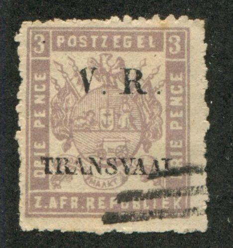 |
|||
| 40 | 1 p., rouge | Fr. 1.50 | |
| 41 | 3 p.,lilas | Fr. 2.50 | |
| 42 | 3 p., lilas (s. rouge) | Fr. 6.-- | |
| 43 | 6 p., bleu | Fr. 3.-- | |
| 44 | 6 p., bleu (s. rouge) | Fr. 6.-- | |
| 45 | 6 p., bleu (s. rose) | Fr. 2.50 | |
| 46 | 1 s., vert | Fr. 2.-- | |
| 47 | 1 s., vert (s. rouge) | Fr. 6.-- | |
| Idem - Surch. renversée | |||
| 48 | 6 p., bleu | Fr. 1.50 | |
| Toutes les 56 | Fr. 100.-- | ||
A misprint: 1 shilling orange?
Uganda (Protectorat). |
|||
| Number | Year | Description | Price in Fr. |
| 1 | 1 anna, noir sur blue ................................................................................................................... | Fr. 0.20 | |
Judging from the bars with "1" cancel (as often used by Oneglia), this Uganda forgery was clearly made by Oneglia.
Uraguay. * |
|||
| Number | Year | Description | Price in Fr. |
1856 - Soleil, légende << Diligencia >>: |
|||
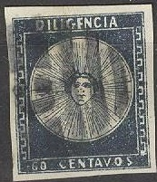 |
|||
| 1 | 1856 | 60 centavos, bleu ............................................................................................................................. | Fr. 1.-- |
| 2 | 80 centavos, vert | Fr. 1.-- | |
| 3 | 1 real, rouge | Fr. 1.-- | |
| 1857 - Soleil, valeur indiquée deux fois: | |||
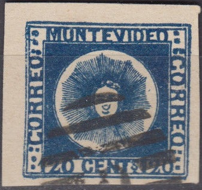 |
|||
| 4 | 1857 | 120 centavos, bleu | Fr. -.50 |
| 5 | 180 centavos, vert | Fr. -.50 | |
| 6 | 240 centavos, rouge | Fr. 1.-- | |
| Idem, erreur: | |||
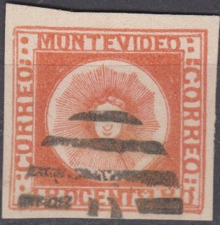 |
|||
| 7 | 180 centavos, rouge | Fr. 1.-- | |
| 1859 - Même genre, valeur indiquée un chiffre maigre: | |||
| 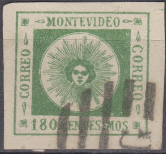 |
|||
| 8 | 1859 | 60 centavos, lilas | Fr. -.50 |
| 9 | 80 centavos, jaune | Fr. -.50 | |
| 10 | 100 centavos, carmin | Fr. -.50 | |
| 11 | 120 centavos, bleu | Fr. -.50 | |
| 12 | 180 centavos, vert | Fr. -.50 | |
| 13 | 240 centavos, rouge | Fr. -.50 | |
| 1860 Même type, chiffre gras: | |||
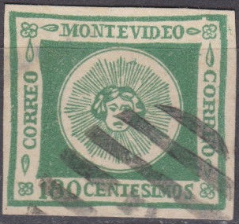 |
|||
| 14 | 1860 | 180 centavos, vert | Fr. 1.-- |
These are Oneglia forgeries, since they all bear either the
bars with "G" cancel or the bars with "1"
cancel, typical for Oneglia forgeries.
The forgeries of the 1857 issue are forgery type E of the book
'Estudio de las Falsificaciones de los Sellos Postales del
Uruguay' by Robert Hoffmann (1948). He does not present any
sample of the second issue [cifras finas/small ciphers] The third
issue [cifras gruesas/fat ciphers] is only represented with the
180 centesimos value (type E).
Vierges (Iles). * |
|||
| Number | Year | Description | Price in Fr. |
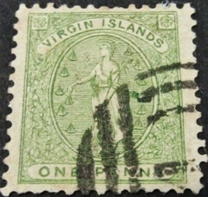 |
|||
1886 - (Gravure en cuivre): |
|||
| 1 | 1 penny, vert ............................................................................................................................. | Fr. 0.30 | |
| 2 | 6 pence rose | Fr. 0.30 | |
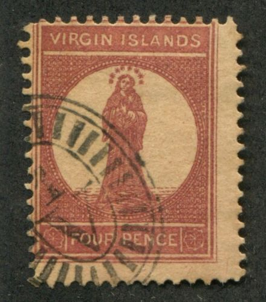 Note the Victoria (Australia) cancel on the 4 p forgery |
|||
| 3 | 1867 | 4 penny, brun rouge sur rose | Fr. 0.50 |
| 4 | 1 shilling, noir et carmin | Fr. 0.50 | |
| 5 | 1 shilling, noir et carmin, grand bordure | Fr. 0.50 | |
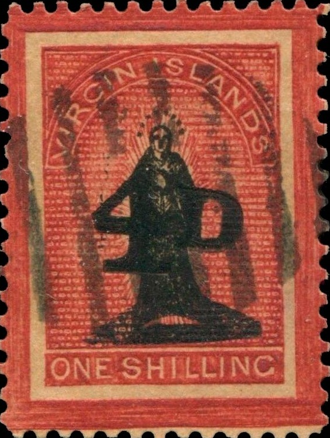 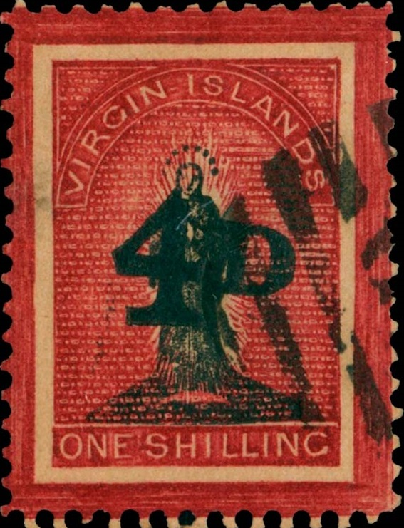 |
|||
| 6 | 1 shilling, noir et carmin, avec surcharge 4 D | Fr. 0.50 | |
These are the forgeries described in the book 'The Oneglia Engraved Forgeries' by Robson Lowe & Carl Walske (1996, 104 pages).
Victoria. * |
|||
| Number | Year | Description | Price in Fr. |
| 1850 - (Gravure en cuivre): | |||
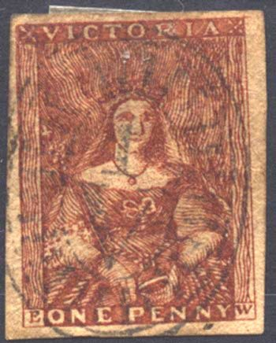 |
|||
| 1 | 1850 | 1 penny, rose ........................................................................................................................... | Fr. -.30 |
| 2 | 1 penny, rouge | Fr. -.30 | |
| 3 | 1 penny, brique | Fr. -.30 | |
| 4 | 2 pence, gris-jaune (fonds divers) | Fr. -.30 | |
| 5 | 2 pence, gris-lilas | Fr. -.30 | |
| 6 | 2 pence, gris | Fr. -.30 | |
| 7 | 2 pence, lilas | Fr. -.30 | |
| 8 | pence, bleu-pâle ("3" forgotten?) | Fr. -.30 | |
| 9 | 3 pence, blue foné | Fr. -.30 | |
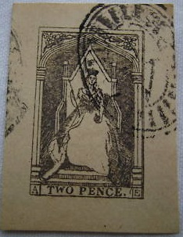 |
|||
| 10 | 1862 | 2 penny, gris-brun (reine s. trone) | Fr. -.30 |
| 11 | 2 penny, brun (reine s. trone) | Fr. -.30 | |
| 12 | 2 penny, lilas-rouge (reine s. trone) | Fr. -.30 | |
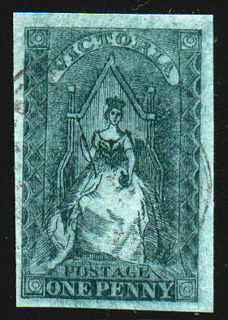 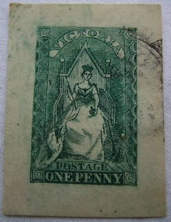 |
|||
| 13 | 1856 | 1 penny, vert (reine filigr. étoile) | Fr. -.30 |
| 14 | 6 pence, bleu (reine filigr. étoile) | Fr. -.30 | |
| 15 | 1867 | 6 penny, noir | Fr. -2.0 |
These Victoria forgeries were also sold by Panelli, and were sometimes attributed to him. Note the very wide margins on some of these forgeries, which implies that they were printed one by one or at least very far apart. These are the forgeries described in the book 'The Oneglia Engraved Forgeries' by Robson Lowe & Carl Walske (1996, 104 pages).
Venezuela. * |
|||
| Number | Year | Description | Price in Fr. |
| 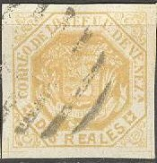 |
|||
| 1 | 1866-1870 | 1/2 cent., vert et jaune.................................................................................................................... | Fr. -.40 |
| 2 | 1 cent., vert et bleu | Fr. -.50 | |
| 3 | 2 reales, jaune | Fr. -.20 | |
| 1874 - Même type avec contrasena Estampillas de Correo en très petits caractères sur deux lignes, en surcharges: | |||
| 4 | 1874 | 2 cent., vert | Fr. -.50 |
| 5 | 2 reales, jaune | Fr. -.20 | |
| 1875 - Même caractère plus gros (Estampillas sans s): | |||
|
|||
| 6 | 1875 | 1 cent., lilas | Fr. -.50 |
| 7 | 2 cent., vert | Fr. -.50 | |
| 8 | 2 reales, jaune | Fr. -.30 | |
| 1876 - Different type. Grand timbre avec Decreto de 27 junio 1870 en très petits caractères en surcharge: | |||
 |
|||
| 9 | 1876 | 1 venezuelano, rose | Fr. 1.-- |
| 10 | 3 venezuelano, rose | Fr. 1.-- | |
| 11 | 5 venezuelano, rose | Fr. 2.-- | |
| 12 | la série de 11 pièces | Fr. 6.50 | |
The above forgeries above have an Oneglia bars with "1" cancel and also a "* CORREOS DE VENEZUELA" cancel.
Vürtemberg. * (Württemberg) |
|||
| Number | Year | Description | Price in Fr. |
1851 - Noir sur couleur, relief: |
|||
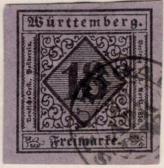 |
|||
| 1 | 1851 | 18 Kreuzer, violet ........................................................................................................................... | Fr. 3.-- |
| 2 | 1851 | 18 Kreuzer, violet foncé | Fr. 3.-- |
| 1857 - Armoire en relief fil de vraie soie dans la largueur: | |||
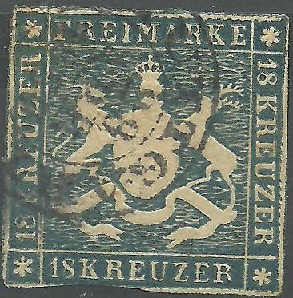 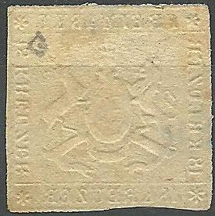 |
|||
| 3 | 1857 | 18 Kreuzer, bleu | Fr. 3.-- |
| 1858-59 - Meme type, sans fil de soie | |||
| |
|||
| 4 | 1858-59 | 18 Kreuzer, bleu | Fr. 2.50 |
| 5 | 18 Kreuzer, bleu dentelés | Fr. 2.50 | |
| 1863-66: | |||
| 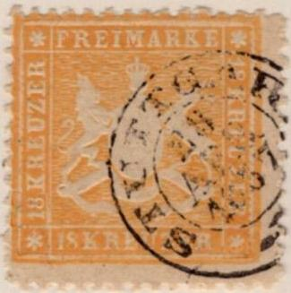 |
|||
| 6 | 1863-66 | 18 Kreuzer, orange dentelés | Fr. 2.-- |
1873 - Type de 1857: |
|||
| 7 | 1873 | 70 Kreuzer, violet | Fr. 3.-- |
These Wurttemberg forgeries all have the cancel "STUTTGART 28 APR 1857" cancel (I have not seen this cancel on forgeries of other values). The perforation and the cancel look very much in style to other Oneglia forgeries I have seen and I therefore think these are Oneglia forgeries.
Zanzibar. * |
|||
| Number | Year | Description | Price in Fr. |
Timbres Anglais, avec surcharge Zanzibar imitations, prix à convenir........................................................................................... |
|||
Zululand. * |
|||
| Number | Year | Description | Price in Fr. |
1888-92 - Timbres de Grande Bretange, vrais, avec << Zululand >> imité en surcharge: |
|||
| 1 | 1888-92 | 1/2 penny, vermillon...................................................................................................................... | Fr. -.20 |
| 2 | 1 penny, lilas | Fr. -.20 | |
| 3 | 2 penny, vert et rouge | Fr. -.40 | |
| 4 | 2 1/2 penny, violet sur bleu | Fr. -.30 | |
| 5 | 3 penny, brun sur jaune | Fr. -.50 | |
| 6 | 5 penny, vert et brun | Fr. -.70 | |
| 7 | 5 penny, violet et bleu | Fr. 1.20 | |
| 8 | 6 penny, brun sur rouge | Fr. -.90 | |
| 9 | 9 penny, violet et bleu | Fr. 4.-- | |
| 10 | 1 shilling, vert | Fr. 2.-- | |
| 11 | 5 shilling, rose | Fr. 10.-- | |
| 1888 - Timbres de Natal, vrais, avec << Zululand >> en surcharge imitation: | |||
| 12 | 1888 | 1 penny, vert | Fr. -.50 |
| 13 | 1894 | 6 pence, violet | Fr. 1.20 |
Pour éviter les équivoques j'averte mes nombreux clients que les imitations pas signées avec N et celles faites par gravures en cuivre sont toujours les plus jolies et les plus parfaites: le tout sauf erreur ou omissions.
Madeira. * |
|||
| Number | Year | Description | Price in Fr. |
1868 - T. P. du Portugal 1866 surchargés: |
|||
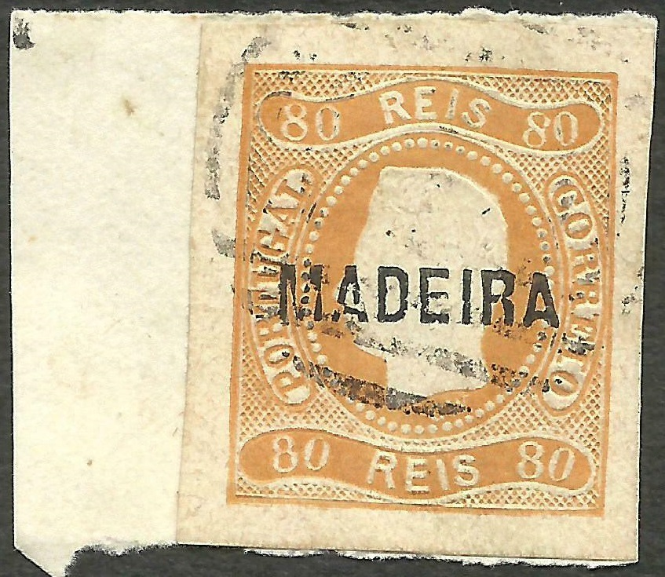 |
|||
| 1 | 1868 | 5 r., noir ....................................................................................................................................... | Fr. 8.-- |
| 2 | 20 r., bistre | Fr. 2.-- | |
| 3 | 50 r., vert | Fr. 2.-- | |
| 4 | 80 r., orange | Fr. 2.-- | |
| 5 | 100 r., lilas | Fr. 2.-- | |
| Id. dent. 12 1/2 | |||
| 6 | 5 r., noir (C.) | Fr. -.60 | |
| 7 | 10 r., jaune | Fr. 1.-- | |
| 8 | 20 r., bistre | Fr. 1.50 | |
| 9 | 25 r., rose | Fr. -.30 | |
| 10 | 50 r., vert | Fr. 2.-- | |
| 11 | 80 r., orange | Fr. 2.-- | |
| 12 | 100 r., lilas | Fr. 2.-- | |
| 13 | 120 r., bleu | Fr. -.60 | |
| 14 | 240 r., violet | Fr. 3.-- | |
The same forgeries that were used for Portugal were used here ("G" of "PORTUGAL" too closed). The above forgery has a bars with "1" cancel.
Pahang. * |
|||
| Number | Year | Description | Price in Fr. |
1890 - T. P. de Malacca 1882 surcharge: |
|||
| 1 | 1890 | 8 c orange........................................................................................................................................ | Fr. 7.-- |
| 2 | 10 c ardoise | Fr. 3.-- | |
| Id. avec Two Cent - 4 diff. types: | |||
| 3 | 2 c. sur 24 c. vert | Fr. 2.-- | |
| 4 | 2 c. sur 24 c. vert | Fr. 1.50 | |
| 5 | 2 c. sur 24 c. vert | Fr. 1.50 | |
| 6 | 2 c. sur 24 c. vert | Fr. 1.50 | |
The forgeries of Straits Settlements were used for these Pahang forgeries. I don't think they are very common, since I've only seen the above one.
Oneglia forgeries, 1906 catalogue, Supplement, part 1

{kind=link}
{kind=link}
{kind=link}
{kind=link}
{kind=link}
{kind=link}
{kind=link}
{kind=link}
{kind=link}
{kind=link}
{kind=link}
{kind=link}
{kind=link}
{kind=link}
{kind=link}
{kind=link}
{kind=link}
{kind=link}
{kind=link}
{kind=link}
{kind=link}
{kind=link}
{kind=link}
{kind=link}
{kind=link}
{kind=link}
{kind=link}
{kind=link}